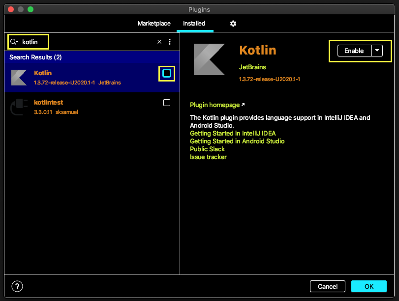
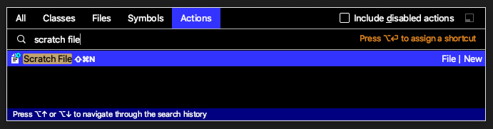
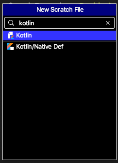
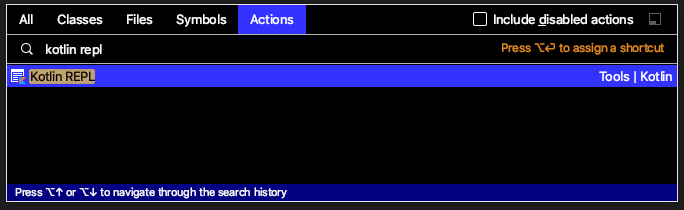
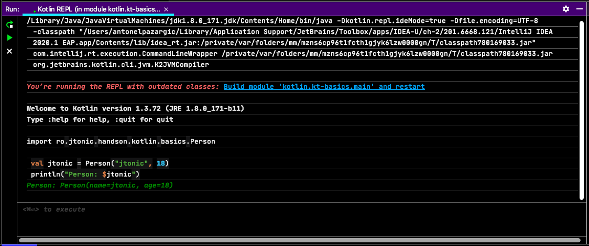
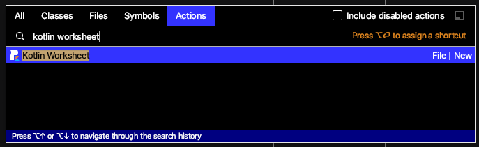

Kotlin was started by Jetbrains in 2010
It went GA on February 15, 2016
Google IO 2017 - Google announced Kotlin as an official programming language for Android development
Google IO 2019 - Kotlin-first (many new APIs and features will be offered first in Kotlin)
- It is concise, expressive, toolable, interoperable and pragmatic
- It's a statically typed programming language
- Inspired by
- Scala (case classes, pattern match)
- C# (extension methods, properties, with and using constructs)
- Groovy (default ‘it' parameter in lambda expressions)
- Swift (down-casting, subclassing and implementation)
- Haskell (ranges)
- Compile to bytecode and run on JVM / Android (compatible with Java 6)
- Can compile to javascript source code
- Can be used as scripting language (kts extension- Gradle/Kotlin)
- Compiles directly to machine code (Kotlin/Native) – in Tech Preview
- Install kotlin on macos using brew
> brew install kotlin
// test the installation
> kotlin -version
> kotlinc -version
- Gradle
File build.gradle
plugins {
id 'org.jetbrains.kotlin.jvm' version '1.3.72'
}
dependencies {
implementation "org.jetbrains.kotlin:kotlin-stdlib-jdk8"
}
- Kotlin DSL for Gradle
File build.gradle.kts
plugins {
kotlin("jvm") version "1.3.72"
}
dependencies {
implementation(kotlin("stdlib-jdk8"))
}
See further details about kotlin gradle setup here
- Maven
File pom.xml
<dependencies>
<dependency>
<groupId>org.jetbrains.kotlin</groupId>
<artifactId>kotlin-stdlib-jdk8</artifactId>
<version>1.3.72</version>
</dependency>
</dependencies>
<build>
<sourceDirectory>${project.basedir}/src/main/kotlin</sourceDirectory>
<testSourceDirectory>${project.basedir}/src/test/kotlin</testSourceDirectory>
<plugins>
<plugin>
<groupId>org.jetbrains.kotlin</groupId>
<artifactId>kotlin-maven-plugin</artifactId>
<version>${kotlin.version}</version>
<executions>
<execution>
<id>compile</id>
<goals> <goal>compile</goal> </goals>
</execution>
<execution>
<id>test-compile</id>
<goals> <goal>test-compile</goal> </goals>
</execution>
</executions>
</plugin>
</plugins>
See further details about kotlin maven setup here
Notes:
- Kotlin can be use with ant build tool. See how here
There are quite a few ways to create the kotlin application bootstrap.
- Top level main method
File App.kt
fun main(vararg args: String) {
println("Hello Kotlin!")
}
Compile and run the application
cd $prj_home/src/main/kotlin
kotlinc ro/jtonic/handson/kotlin/basics/App.kt AppKt
kotlin -classpath AppKt.jar ro.jtonic.handson.kotlin.basics.AppKt
See it on github
- Top level main (simplified)
File App.kt
fun main() {
println("Hello Kotlin!")
}
Compile and run the application
cd $prj_home/src/main/kotlin
kotlinc ro/jtonic/handson/kotlin/basics/App.kt AppKt
kotlin -classpath AppKt.jar ro.jtonic.handson.kotlin.basics.AppKt
See it on github
- The "java way" with companion object
File App.kt
class App {
companion object {
@JvmStatic
fun main(vararg args: String) {
println("Hello Kotlin!")
}
}
}
Compile and run the application
cd $prj_home/src/main/kotlin
kotlinc ro/jtonic/handson/kotlin/basics/App.kt AppKt
kotlin -classpath AppKt.jar ro.jtonic.handson.kotlin.basics.AppKt
See it on github
- kotlin scripting
Create a main.kts script file outside the src folder (e.g. $prj_home/scripts/main.kts).
File main.kts
val message = "Hello Kotlin!"
println("Hello Kotlin!")
Run the script
cd $prj_home/scripts
kotlinc -script main.kts
Notes:
- Jetbrains works on an improved support for kotlin scripting.
For additional details please consult KEEP-75 - Kotlin community provides some useful tools which simplifies and extend the out-of-the-box scripting support.
- For kotlin-based cli I recommend
micronautandpicocli.
See it on github
Null safety
- Not null versus nullable types (
T and T?)
fun print(msg: String?) {}
fun printPage(msg: String) {}
print("Hello kotlin")
print(null)
printPage(null) // compilation error
- safe call operator (
?.)
"test safe call operator" {
data class User(val name: String, val address: String)
var user: User? = null
user?.address shouldBe null
user = User("Tony", "Mihai Bravu")
user?.address shouldBe "Mihai Bravu"
}
See it on github
- elvis operator (
?:)
"test elvis operator" {
var address: String? = null
address ?: "unknown address" shouldBe "unknown address"
address = "Kotlin Island"
address shouldBe "Kotlin Island"
}
See it on github
- safe cast operator (
as?)
"test safe cast operator" {
val jtonic = User("jtonic", "Mihai Bravu") as Any
val tony = Person("Tony", 18) as Any
(jtonic as? User) shouldNotBe null
(tony as? User) shouldBe null
val jtonicUserAddress = (jtonic as? User)?.address
val tonyUserAddress = (tony as? User)?.address
jtonicUserAddress shouldBe "Mihai Bravu"
tonyUserAddress shouldBe null
}
- Not null assertion (
!!)
"test not null assertion" {
fun length(s: String?): Int {
val notNullString: String = s!! //Kotlin.KotlinNullPointerException
return notNullString.length
}
length("jtonic") shouldBe 6
shouldThrow<NullPointerException> {
length(null)
}
shouldThrow<KotlinNullPointerException> {
length(null)
}
}
Notes:
- throws
KotlinNullPointerExceptionwhich extendsjava.lang.NullPointerException - it is thrown at assignment site
- it should be avoided in application written entirely in kotlin. It is used when calling java API from kotlin
See it on github
Notes:
- The information presented in this section is based on IntelliJ Idea Ultimate 2020.1 and kotlin plugin 1.3.72.
- Install Kotlin Idea plugin
- Select
Help | Find Actions...from main menu (or presscmd-shift-a) - Type
pluginsand hitEnter - Enable the kotlin plugin by following the steps highlighted in the image below
- Select

- Convert from java to kotlin
- Open the java file to convert, or just select it in the project tool window
- Select
Help | Find Actions...from main menu (or press cmd-shift-a) - Type
convert java file to kotlin fileand hit Enter

The following java file
public class Person {
private String name;
private int age;
// constructor, getter and setters (28 lines of code)
}
gets converted to the following kotlin
class Person(var name: String, var age: Int)
See it on github
- Decompile kotlin to java
Doesn't work any longer with 2020.1 and kotlin 1.3.71 :(
- Kotlin scratch file
Scratch files is an amazing idea features.
It allows development by experimenting.
Kotlin plugin contributes to the scratch feature feature.
How to:
- Open
Find Action... - Type
scratch file

- Type
kotlin

- Select a project module classpath

- Run the scratch file kotlin code, when the interactive is checked out

Notes:
- A scratch file can be renamed. One can give it a meaningful name.
- A scratch file has IDE visibility. It can be seen in every project.
- Kotlin REPL
How to:
- Open
Find Action... - Type
kotlin REPL

- Choose a project module

- Start coding.For execution press
cmd-enter

- Show quick documentation in REPL

Notes:
- (Almost) all supports in the IDE editor works in REPL as well:
- autocomplete,
- automatic imports,
- compilation errors
- quick source
- quick documentation
- and much more....
- Kotlin worksheet
How to:
- Open
Find Action... - Type
kotlin REPL

- Start coding
See Idea inspection and hint in action.

- Click the green arrow button to execute the code if the interactive mode is off.

Notes:
There are some similarities between the kotlin scratch file and kotlin worksheet.
The worksheet:
- file is stored in project, it can be versioned.
- has kts file extension (it is a kotlin script file)
- requires the
kotlin-script-runtimein project classpath. If it is not then Idea offers to add it.
What to do next:
- val, var
- fun
- (default) visibility modifiers
- open/close classes/methods
- extension methods
- const val
- data class
- primary constructor
- inheritance, implementation
- custom getters/setters
- primary and secondary constructors
- singleton with object
- companion object
- delegation (by)
- generics (reified)
- aliases
- inline classes
- kotlin type hierarchy
This will be moved in a separate codelab!!!
Options
- Design patterns in kotlin
- Kotlin collections
- Scripting in kotlin (cli)
- Functional programming in kotlin
- Reactive programming in kotlin
- Kotlin coroutines
- Kotlin 1.4
- Micronaut and Kotlin
- Kotlin JS
- Kotlin Multi Platform Programming
- Kotlin DSL
- SpringBoot and Kotlin